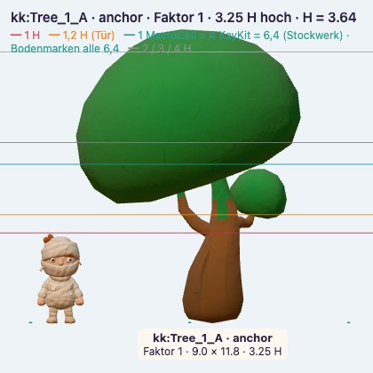
KugelbaumKayKit · primärTree_1_A · 3.25 H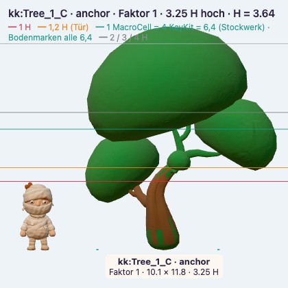
Kugelbaum, ausladendKayKit · primärTree_1_C · 3.25 H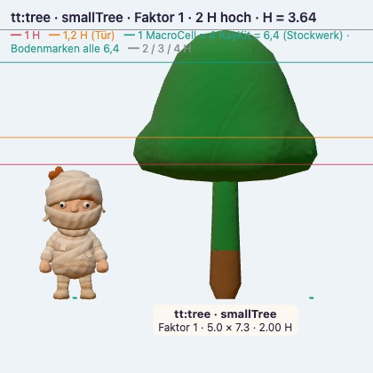
JungbaumTiny Treats · primärtree · 2 H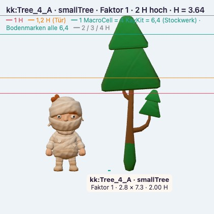
KieferKayKit · primärTree_4_A · 2 H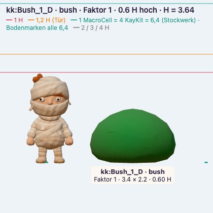
Waldrandbusch, flachKayKit · primärBush_1_D · 0.6 H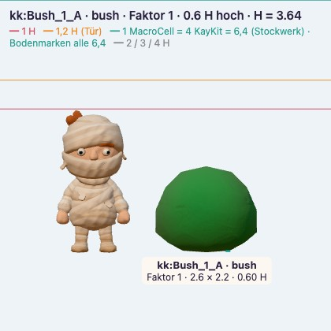
Waldrandbusch, rundKayKit · primärBush_1_A · 0.6 H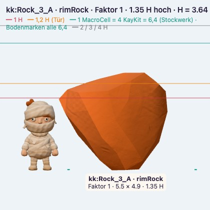
CanyonfelsKayKit · primärRock_3_A · 1.35 H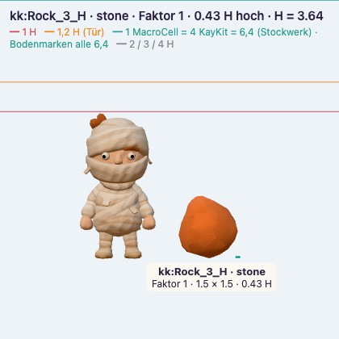
KieselKayKit · primärRock_3_H · 0.43 H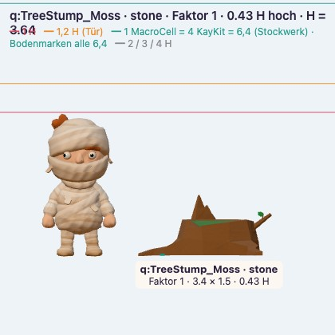
BaumstumpfQuaternius · ErgänzungTreeStump_Moss · 0.43 H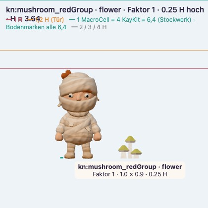
PilzeKenney · Ergänzungmushroom_redGroup · 0.25 H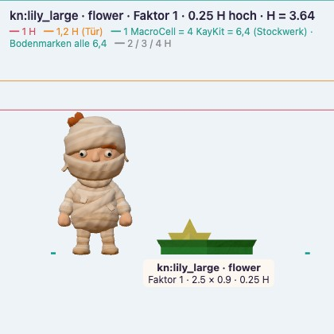
SeeroseKenney · Ergänzunglily_large · 0.25 H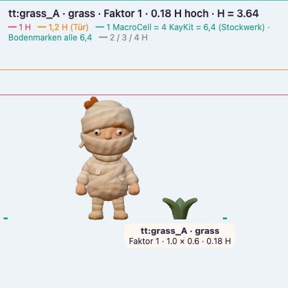
WaldgrasTiny Treats · primärgrass_A · 0.18 H